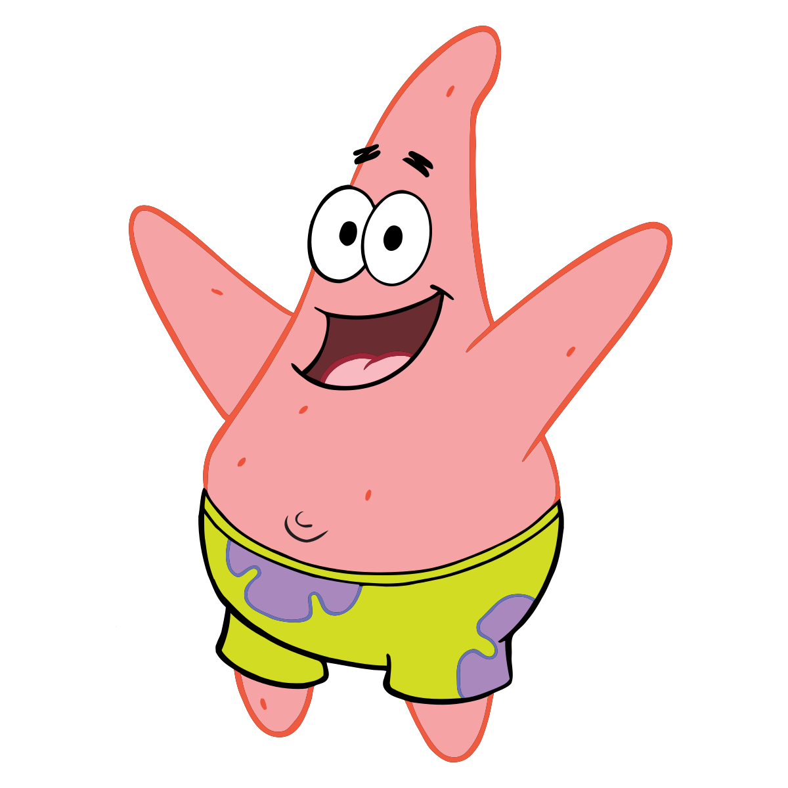
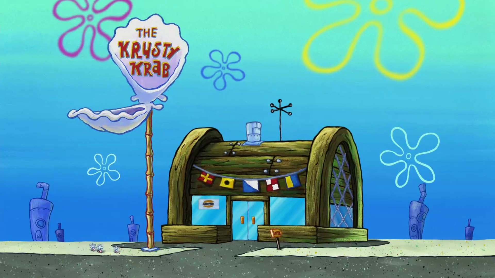
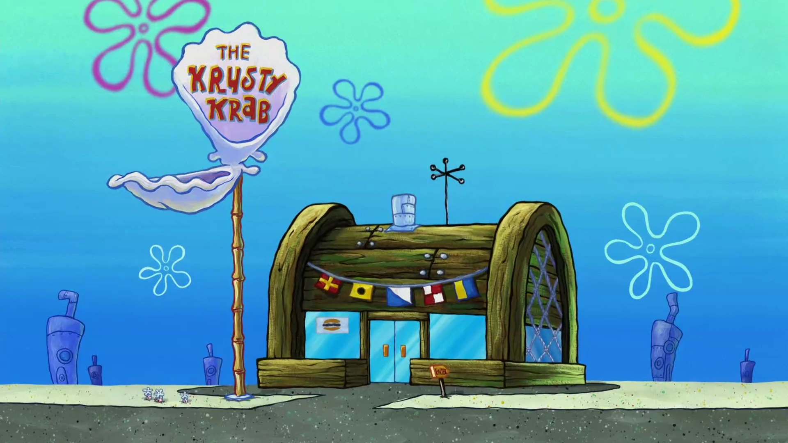
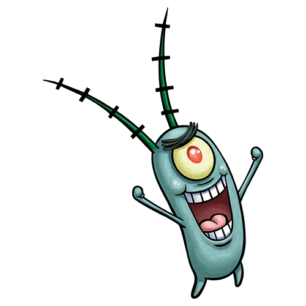
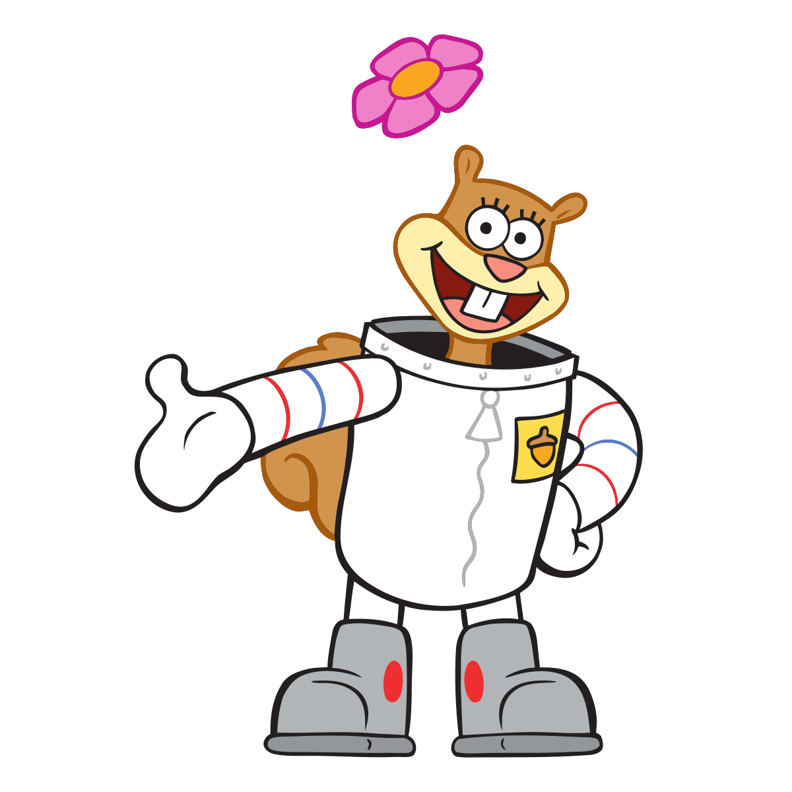

Spongebob žije na dně moří v Ananasu.
Pracuje jako kuchař v místní restauraci Krusty Krab(Křupavý krab).
Má nejlepšího kamráda Patrika, který žije pod kamenem.
Sepiják

Sepiják žije v kameni vedle Spongeboba, nemá ho moc rád
Také pracuje v Křupavém Krabovy jako pokladní.
Rád hraje na klarinet a maluje.
Patrik
Patrik je nejlepší přítel Spongeboba.
Žije pod kamenem vedle Sépijáka.
Celý nábytek má z písku a celý den nic nedělá.
Pan Krabs
 

Pan Krabs je ředitel Křupavého kraba.
Má dceru Perlu(Velryba).
Jeho úhlavní nepřítel je Plankton.
Je to skrblík.
Sheldon J. Plankton
Plankton řídí konkurenční restauraci Chum Bucket(Kamrádský Kyblík).
Bývalý nejlepší přítel Pana Krabse, nyní ovšem rivalové.
Snaží se ukrást jeho tajný recept na krabí hamburger.
Má robotickou ženu Karen.
Sandy Veverka
Sandy je z Texasu, potřebuje ale kyslík proto žije v podvodní bublině.
V bublině má strom, aby se ale mohla pohybovat pod vodou nosí skafandr.
Druhá nejlepší kamarádka Spongeboba, často spolu zápasí v karate.